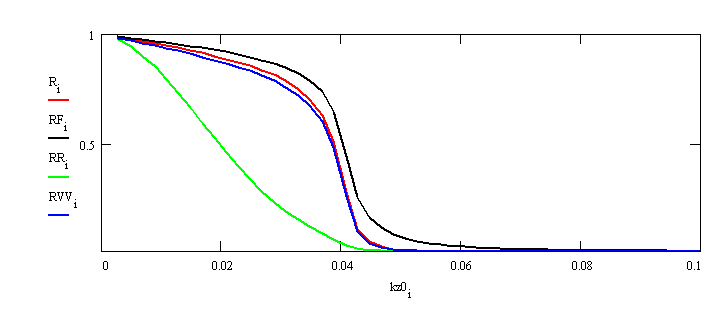

Roughness in Specular Reflectivity
Depending on the wavelength range of their Fourier components, two types of roughness are to be distinguished:
Macroscopic roughness is due to facets wider than the coherence
length, oriented at various angles to the x-ray beam. The symptom of
macroscopic
roughness is a specular reflection broader than the resolution function
of the instrument (as determined by the angular width of the direct
beam)
or even split peaks. For x-ray mirrors this type of roughness is called
slope error. Since the incident angle for such samples is not
well-defined,
a quantitative description of such samples is often problematic.
Microscopic or atomic roughness is on a much smaller scale than the coherence length and hence describes distortions of the wavefront of the incident wave yielding a reduction of the intensity of the scattered beam as compared to an ideal interface. Since in specular reflectivity the lateral component of the scattering vector is zero, we only have to deal with the laterally averaged roughness and not with the detailed shape of the surface defects (point defects, steps, islands, ...). An often used assumption is that the surface height function obeys a Gaussian distribution, which leads to a laterally averaged density with the shape of the error function.
One of the earliest descriptions of roughness we find in Lord Rayleigh's treatment of the reflection of acoustic waves from a hard corrugated wall. In this case the ideal reflectivity is multiplied with an exponential damping factor
RR(q) = RF(q)* exp(-σ2q2)were RF is the Fresnel reflectivity and σ is the root mean square roughness (r.m.s. roughness) of the interface.
This description has some flaws: It cannot be extended easily to the
case of multiple layers other than that the same roughness is assumed
for
each interface or some effective roughness which is some kind of mean
of
the various interface roughnesses. Even worse, the Rayleigh model is
not
good below and in the vicinity of the critical angle. This can be seen
if the Rayleigh model is compared to a discrete roughness model, where
the laterally-averaged density is approximated by thin discrete slabs
and
then treated exactly with the matrix method.
Fig 1. Laterally averaged density ρcont(z) and discrete approximation ρk with 20 slabs for s = 1Å.
The most succesful roughness model so far has been proposed by Nevot and Croce [1], and mathematically analyzed by Vidal and Vincent [2]. We will refer to it as the NCVV model. In this model, each element of the interface matrix in the matrix method is multiplied by a factor
(Ai,i+1,rough)j,k = (Ai,i+1)j,k exp{-σ2 [Re(kz,i - (-1)j+k kz,i+1)]2 / 2}where the factor (-1)j+k yields the correct sign. For the reflectivity from a rough interface, this ansatz provides the formula
This model compares well with the discrete model. Since the roughness
factors are specific to each interface, a detailed description of a
multilayer
system can be given. Furthermore, the laterally-averaged density can be
derived with a specific error function for each interface, as for
instance
in the program PARRAT32. Discrete model, Rayleigh model, and NCVV model
are compared below.
Fig.2. XR from a very rough surface (σ=20Å).
R: discrete roughness model with 50 slabs, RF: Fresnel reflectivity
from
an ideal surface, RR: simple Rayleigh model, RVV Vidal-Vincent theory.
RR follows closely the RVV model beyond the critical angle. However the
Rayleigh model RR is not useful below the and in the vicinity of the
critical angle. The discrete model yields results
closely
to RVV, but breaks down at about kz0 > 0.075Å-1 due to its discreet nature.

Fig.3. Same as Fig.2, but with a linear axis.The Rayleigh model RR yields a bad description below the critical angle. The discrete model and RVV agree very well. Note the shift of critical angle compared to RF for this very rough surface.
References
[1] L. Nevot and P. Croce, Rev. Phys. Appl. 15, 761 (1980).
[2] B. Vidal and P. Vincent, Applied Optics 23, 1794-1801 (1984).